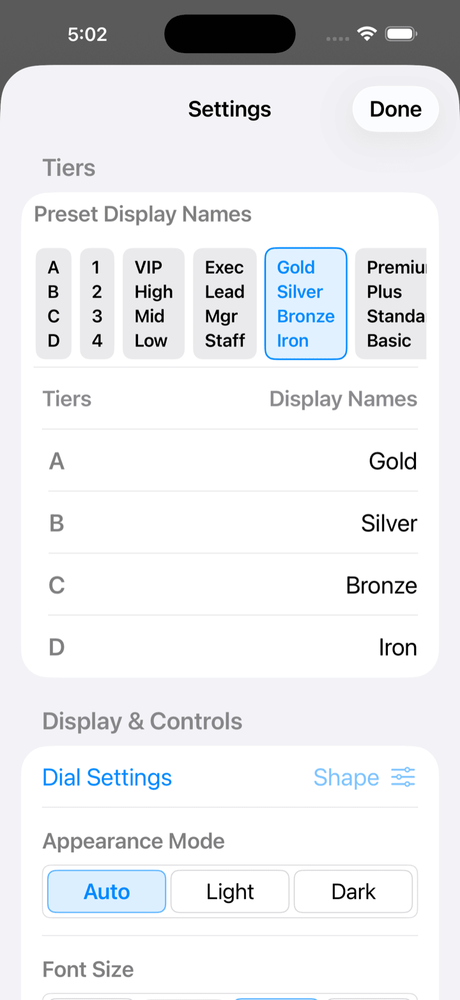

Divigo 사용 설명서
화면 구성 중심으로 만든 시각적 가이드
Divigo은 인원수와 금액을 다이얼로 조절하면서 결제 분담을 정하는 앱입니다
이 가이드는 글을 읽기보다 먼저 화면 전체의 역할을 파악할 수 있도록, 메인 화면, 잠금, 설정, 통화 표시를 도표 중심으로 정리했습니다
4개 구분
A / B / C / D를 개별적으로 조절
잠금 2종
인원 잠금과 전체 조작 잠금
지역 대응
통화 표시가 기기 설정을 따릅니다
메인 화면
표시를 탭하면 해당 위치의 설명이 열립니다

참여 인원수
전체 인원수를 확인할 수 있습니다
합계 패널 잠금
인원 다이얼을 잠가 의도치 않은 변경을 방지합니다
A 패널
A 패널에서는 인원수만 지정하며, 금액은 자동으로 계산됩니다
결제 총액
먼저 총액(결제 총액)을 입력합니다. 숫자를 탭하면 키패드로 입력할 수 있습니다
금액 다이얼 단위
금액 다이얼의 증감 폭을 전환합니다. 길게 누르면 값을 설정할 수 있습니다
B / C / D 패널
B / C / D 패널에서는 인원수와 금액을 지정하며, 과부족 금액은 A에 배정됩니다
패널 스타일
이 화면의 외관을 사용자화합니다. 정산 처리에는 영향을 주지 않습니다
설정
설정 화면을 엽니다
전체 조작 잠금
전부 잠가 의도치 않은 변경을 방지합니다
표시 바깥의 빈 곳을 탭하면 설명이 닫힙니다
사용 흐름
1
합계 금액 입력
상단 패널에서 다이얼을 돌리거나 키패드로 총액을 입력합니다
2
인원수 맞추기
왼쪽의 다이얼로 A / B / C / D 각 구분의 인원수를 정합니다
3
금액 조정
B / C / D 금액을 조정하면 A 금액이 자동으로 갱신됩니다
4
필요하면 잠금
인원만 고정하거나 전체 조작을 고정해 오조작을 방지합니다
설정 화면 보기
설정 화면
표시를 탭하면 각 항목의 역할이 열립니다

프리셋
A/B/C/D 구분 이름을 프리셋에서 선택합니다
다이얼 설정
다이얼 전용 설정 시트가 열립니다. 감도의 미세 조정도 가능합니다
화면 모드
자동에서는 시스템 설정을 따릅니다
글자 크기
자동에서는 시스템의 더 큰 텍스트 설정을 따릅니다. 대는 표준의 1.5배, 특대는 2배입니다
설정의 세부 사항은 아래 보조 캡처에서도 확인할 수 있습니다
지역별 통화 처리
일본어 / 일본
¥12,000
다이얼 단위 예: 1 / 10 / 100 / 500 / 1000
정수 통화로 처리합니다. 단위 표시는 통화 기호 없이 숫자로만 표시됩니다
영어 / 미국
$12.00
다이얼 단위 예: 0.01 / 0.10 / 1.00 / 5.00 / 10.00
소수점 두 자리 통화에서는 최소 통화 단위를 기준으로 금액을 저장합니다
영어 / 쿠웨이트
KWD 1.000
다이얼 단위 예: 0.001 / 0.010 / 0.100 / 0.500 / 1.000
소수점 세 자리 통화도 지원하며, 표시와 내부 단위가 어긋나지 않도록 처리합니다
화면 캡처 보충
다이얼 설정 진입

다이얼 설정 항목에서 감도와 외관을 조정하는 시트를 열 수 있습니다
화면 모드

자동, 라이트, 다크를 선택할 수 있습니다. 자동은 시스템 설정을 따릅니다
다크 표시

어두운 환경에서는 다크 표시로 전환해 가독성을 유지할 수 있습니다
배경 변형


배경은 브라운 가죽과 블랙 가죽을 전환할 수 있습니다. 모노톤은 같은 섹션에서 선택할 수 있습니다
버전 기록
| 버전 | 출시일 | 개발 환경 |
|---|---|---|
| 1.0.0 | 2011/10/4 | 초기 릴리스 — Objective-C, Xcode 4, iOS 4 |
| 1.1.0 | 2012/4/10 | Objective-C, Xcode 4, iOS 5 |
| 1.2.0 | 2017/4/19 | Objective-C, Xcode 8, iOS 10 |
| 2.0.0 | 2026/4/16 | Swift 6 / SwiftUI, Xcode 26, iOS 26 |
| 2.0.1 | 2026/4/17 | 개발자 응원 기능(후원·광고) 추가 |
| 2.1.0 | 2026/4/22 | 인원 잠금, 전체 조작 잠금, 다이얼 설정, 화면 모드, 배경 설정, 금액 다이얼 단위 설정, 지역별 통화 처리 추가 |